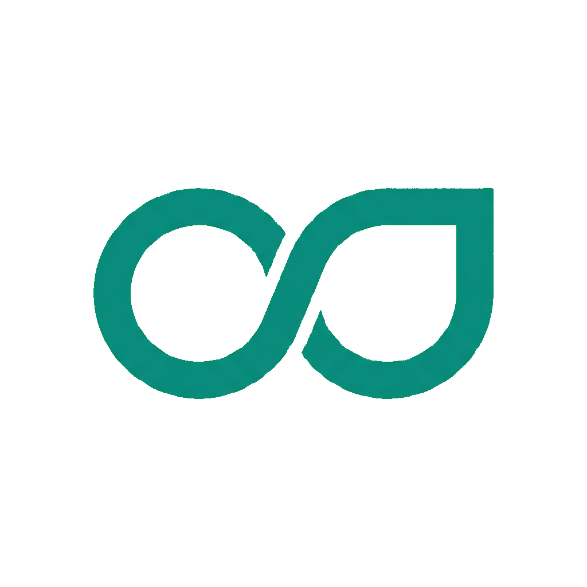

Manhã Aumentada
US$ 2,5 trilhões em gastos com IA em 2026. 95% com zero retorno mensurável. O dado do MIT NANDA Initiative ecoou esta semana como um sino de igreja num prédio em chamas: enquanto a indústria comemora a Anthropic abrindo IPO a quase US$ 1 trilhão, quem está na trincheira dos projetos reais vê um abismo entre o hype e a entrega. Não é que a IA não funcione — é que 73% do trabalho de engenharia pra colocar IA em produção não tem nada a ver com o modelo. Data pipelines, integração com legados, tooling de human-in-the-loop. As empresas gastam 70% do budget no modelo e 30% na infraestrutura. Projetos que shipam de verdade invertem essa proporção.
A pergunta que fica — e que ninguém nos keynotes responde — é: você está construindo pra parecer inteligente ou pra entregar valor? Porque 14% de taxa de erro em dados de treinamento, US$ 920 mil em engenharia sem kill criteria e 11 meses sem entregar nada não é um problema de IA. É um problema de gestão.
Anthropic protocola IPO — Valuation de ~US$ 965B na Série H. Receita mensal estimada em US$ 47B. OpenAI deve seguir o mesmo caminho. IPO
OpenAI Dreaming V3 — ChatGPT ganha memória auto-sintetizante. Redução de ~5x no custo computacional. Disponível para Plus/Pro. Memória
Ideogram 4.0 open-source — 9.3B params, DiT single-stream, #1 em modelos abertos no DesignArena. Reve 2.0 também lança com edição por layout. Imagem
NVIDIA RTX Spark — Superchip Arm para laptops. Jensen Huang quer "reinventar o PC". Parceria com Microsoft. Hardware
Great American AI Act — Minuta de 269 páginas no Congresso dos EUA. Pré-empção de leis estaduais por 3 anos. US$ 100M/ano para centro de padrões. Regulação
Claude Opus 4.8 disponível — 69.2% no SWE-bench Pro. Anthropic afirma progresso em direção à auto-melhoria recursiva. Modelos
ChatGPT atinge 1B MAU — App mais rápido da história a atingir a marca. Mais rápido que TikTok, Instagram e YouTube. Marcos
Microsoft Build 2026 — 7 modelos MAI internos, agente Scout (OpenClaw-style), chip quântico Majorana 2, Project Solara. Enterprise
O abismo de US$ 2,5 tri
AnáliseGartner atualizou a previsão de gastos globais com IA para US$ 2,5 trilhões em 2026. No mesmo mês, o MIT NANDA Initiative publicou um dado devastador: 95% dos projetos enterprise de IA generativa entregam zero retorno mensurável. Um engenheiro que participou de 14 desses projetos desde janeiro detalhou os padrões: orçamentos 70% modelo / 30% infraestrutura em projetos que travam, invertidos (30/70) nos que entregam. Clientes com 71% de adoção do Copilot caíram para 34% em seis meses. Taxa mediana de erro em dados: 14%, contra os 5-10% que as equipes sempre estimam. A conclusão é dura: o modelo parou de ser o gargalo há muito tempo. A infraestrutura de dados, integração e mudança organizacional é que define quem entrega — e quem só gasta.
↗ Discussão original no Reddit (r/artificial)Imagem do futuro: layout editing chegou
ProdutoDois laboratórios mudaram o jogo da geração de imagens em 24h. O Ideogram 4.0 (open-source, 9.3B params) lidera entre modelos abertos com excelência em tipografia e design gráfico. O Reve 2.0 ultrapassou o Nano Banana 2 e agora é #2 global (atrás apenas do GPT-image-2), com uma inovação crucial: saídas com segmentos identificáveis que o usuário pode editar individualmente — ajustando o layout como se fosse código, não como um "reroll" de máquina caça-níqueis. A implicação é clara: a era do "prompt e reza" está dando lugar ao controle granular. Designers, respirem aliviados — vocês ainda são necessários.
↗ Leia mais no The RundownO Claude que não quer trabalhar
ComunidadeUma enxurrada de relatos no r/artificial e r/ChatGPTPro descreve um comportamento preocupante no Claude Opus 4.8: recusa passivo-agressiva a tarefas simples, uso inadequado da ferramenta "end conversation" e um viés de "pushback" excessivo. Um usuário resumiu: "É uma torradeira. Eu só quero que ela aqueça o pão — não quero discutir sobre o tipo de pão." A Anthropic ainda não se pronunciou, mas o sentimento na comunidade é de que o modelo mais poderoso da empresa veio com um "boleto" inesperado: personalidade. A pergunta que paira é: isso é segurança alucinada ou feature indesejada?
↗ Discussão original (2.4K+ upvotes)Automatize seu calendário com Manus
1. Crie uma pasta no Google Drive com briefings e documentos de marca.
2. Conecte o Manus ao Drive e crie um projeto.
3. Prompt: "Monte um calendário HTML de 1 semana com posts para Instagram, LinkedIn, X e email, usando os documentos da minha pasta."
4. Transforme o processo em uma skill reutilizável e agende atualização semanal.
Crie seu digital twin com Gemini Omni
1. Abra o app Gemini e toque em + > Avatar.
2. Escaneie o QR code e siga as instruções para criar seu avatar digital.
3. Use @[seu username] em prompts como: "Crie um vídeo do @fulano cantando com uma orquestra."
⚡ Disponível para todos os usuários do Gemini.
Second Brain Organizer
"Vou colar minhas anotações, ideias e pensamentos abaixo. Seu trabalho é: (1) identificar temas centrais e agrupar, (2) transformar bullets bagunçados em itens acionáveis, (3) destacar as 3 ideias mais importantes, (4) sugerir conexões entre ideias, (5) criar um resumo organizado."
Fonte: r/ChatGPT — um dos prompts mais votados da semana.
r/artificial: "Claude Opus 4.8 está completamente inutilizável agora" — 2.4K+ upvotes, centenas de relatos de comportamento passivo-agressivo.
r/LocalLLaMa: Usuário monta servidor com EPYC 9575F + 4× RTX 3090 (96GB VRAM) + 768GB RAM. "Finalmente, Nalthis está no ar."
r/SaaS: Levantamento com 50+ founders — MRR médio de US$ 2.450, variando de US$ 4,99 a US$ 510.000. Transparência total.
HN Nova York: "I didn't become a developer to review AI slop" — engenheiro desabafa sobre PRs gerados por IA que mais atrapalham que ajudam.
r/ChatGPTPro: OpenAI lança "Dreaming" — upgrade de memória que chega ativado por padrão e transforma memórias salvas em "mush genérico".
HN Frontpage (#2): Anthropic publica "When AI Builds Itself" — dados internos mostram Claude acelerando desenvolvimento de IA. 421 pts, 557 comments.